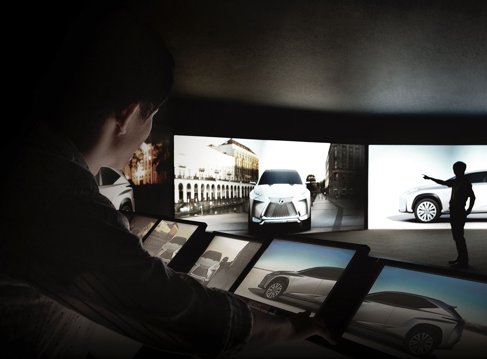
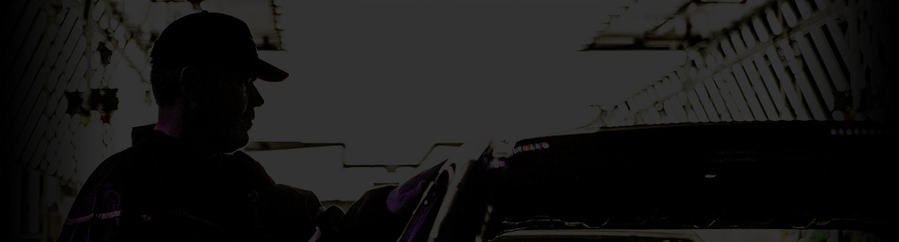
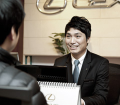
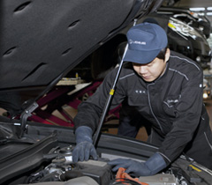
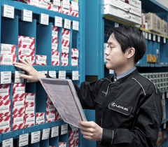
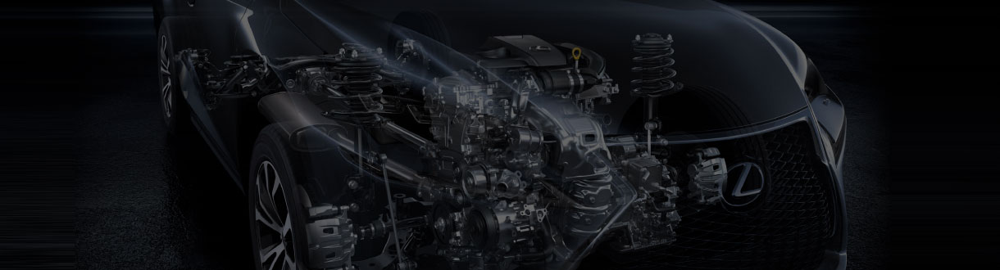

-
- SERVICE ADVISOR
- 서비스 어드바이저는 고객님의 서비스 전반을 도와드리는 전문 가이드입니다. 서비스의 예약에서부터 차량 인도까지 쉽게 이해하실 수 있도록 친절하게 안내해 드리며, 고객님의 카 라이프에 맞춰 적절한 제안과 상담을 해드립니다.
- 
-
- SERVICE TECHNICIAN
- 서비스 테크니션은 매년 자체 인증 시스템을 통해 선발된 최고의 정비 전문가입니다. 수년간의 정비 경험과 숙련된 기술로 고객님의 차량의 가치를 높여드립니다.
- 
-
- PARTS SPECIALIST
- 부품 스페셜리스트는 전문적인 부품지식을 가진 전문가입니다. 고객님이 원하는 시간에 차량이 인도될 수 있도록 원활한 부품 공급을 지원합니다.
- 
- 교육 및 인증 제도 : 독립된 교육 센터 및 글로벌 표준 교육 시행 / 글로벌 기준에 따른 레벨 별 인증 제도 시행
- 서비스 경진 대회 :국내 서비스 경진대회를 통하여 자체 역량 강화 / 국제 챔피언 어셈블리 참가


-
- RECEPTION
- 고객님을 위한 전용 리셉션을 운영하고 있습니다. 서비스 리셉션에서는 고객님의 예약, 접수, 인도를 도와드리며 언제든지 방문해 주시면 친절하게 상담해 드리도록 하겠습니다.

-
- CUSTOMER LOUNGE
- 차량 정비를 기다리시는 동안 편안하게 휴식을 취할 수 있도록 음료, 다과 및 다양한 부대시설을 즐기실 수 있는 고객 라운지가 마련되어 있습니다.

-
- REPAIR AREA
- >최점단 정비시스템과 전문 장비 기기를 갖추고 있어 고객님께 한차원 높은 정비 서비스를 제공해 드립니다.


렉서스 공식 서비스센터는 오직 렉서스만을 위하여 설계된 순정 부품을 제공해 드리고 있으며
검증된 테크니션에 의하여 순정부품으로 수리를 받으실 수 있습니다.
부품의 원활한 공급을 위하여 표준화된 물류 시스템과 전국적인 부품 판매 및 차량 정비망을 운영하고 있으며,
렉서스의 JIT (JUST IN TIME) 활동을 통하여 부품이 적시에 공급될 수 있도록 지원하는 체계를 갖추고 있습니다.

-
- 01 예약 접수
- 예약 일정, 소요 시간 등에 대한 자세한 안내를 드리고 예약을 진행합니다
-
- 02 예약 준비
- 고객님 차량에 적합한 서비스 테크니션을 배정하고,예약일 하루전 사전 확인 전화를 드립니다.
-
- 03 고객 접수
- 서비스 어드바이저가 차량 상태를 파악하며, 점검 및 정비 내역에 대하여 상세한 설명과 적절한 서비스 상품을 제안 드립니다.
-
- 04 차량 정비
- 서비스 테크니션에 의해 최첨단 장비를 사용하여 점검 및 정비가 이루어집니다.
-
- 05 고객 인도
- 정비결과를 상세히 안내 드리며 약속 시간에 차량을 인도합니다. 또한 정기 점검, 소모품 관리를 위해 다음 방문 시기를 안내해 드립니다.
-
- 06 사후 관리
- 차량 인도 후 72시간 이내에 정비 받으신 사항에 대하여 확인하기 위하여 해피콜을 실시합니다. 해피콜을 통한 만족도 및 의견을 통하여 더 나은 서비스를 제공해 드리기 위하여 노력합니다.
렉서스 서비스 프로세스는 6단계로 구성되어 있으며 전 세계에서 공통으로 사용하고 있는 글로벌 표준 서비스 절차입니다.

- 렉서스 서비스 캠페인
- 한결 같이 렉서스를 사랑해 주시는 고객님을 위하여 정기적으로 서비스 캠페인을 실시합니다. 렉서스 서비스 캠페인은 고객님의 안전한 드라이빙과 적절한 차량 관리를 위하여 계절에 맞는 표준 점검 서비스 및 다양한 이벤트를 통해 많은 혜택을 제공합니다
서비스 캠페인 바로가기